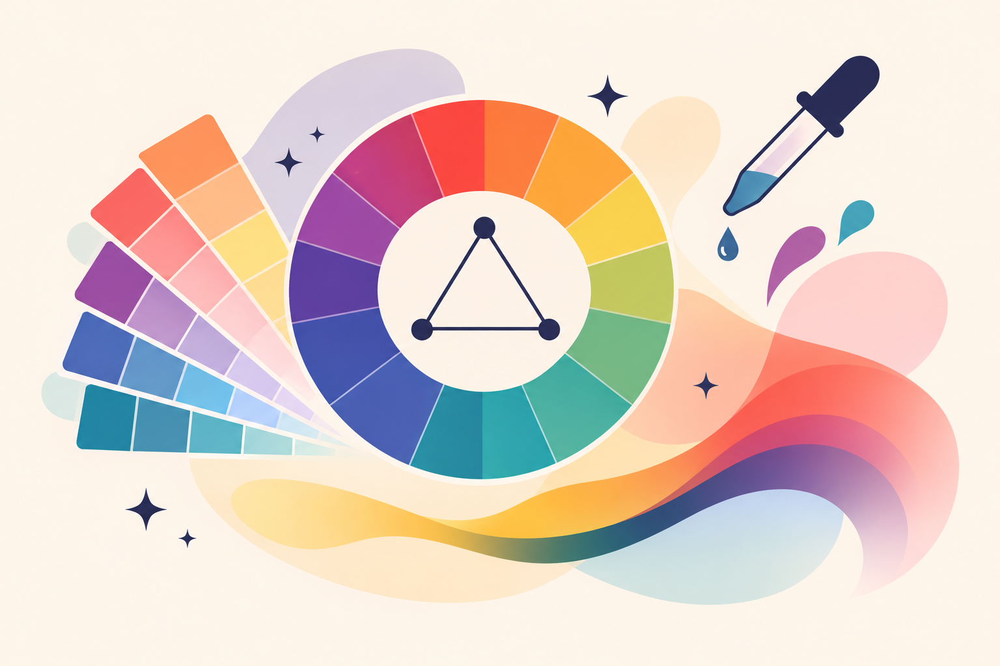

Primary Colors
Red, yellow, and blue are the traditional primary colors used in the basic artist's color wheel. They are used to create secondary colors.
Graphic and Web Design Toolkit
Discover the language of color
Colors have the power to communicate ideas, create emotions, and bring designs to life. Discover how different colors work together to create beautiful and balanced designs.

Start with the basics
Understanding how colors work together is one of the most important parts of good design.
Color theory is the study of how colors relate to one another and how they can be combined to create different visual effects.
Designers use color theory to create balanced color palettes, make important information stand out, and communicate the personality of a brand or website.
Learning a few basic color principles can help you make more thoughtful design choices.
The foundation of color
The color wheel is a visual tool that shows how colors relate to each other.
A guide to understanding color relationships.
Red, yellow, and blue are the traditional primary colors used in the basic artist's color wheel. They are used to create secondary colors.
Orange, green, and purple are created by mixing two primary colors together.
Tertiary colors are created by combining a primary color with a neighboring secondary color.
Look a little closer
Understanding these three properties makes it easier to adjust colors and create different looks.
Hue refers to the actual color you see, such as red, blue, green, or yellow.
Saturation describes how vivid or muted a color appears. Highly saturated colors look more intense.
Value describes how light or dark a color is. Adding white makes a tint, while adding black creates a shade.
Make colors work together
Color harmonies are combinations of colors that create different visual relationships. Here are four popular combinations designers use.
Colors located directly opposite one another on the color wheel. They create strong contrast and help important details stand out.
Example: Blue + Orange
Colors that sit next to each other on the color wheel. They create a smooth, coordinated, and harmonious appearance.
Example: Blue + Teal + Green
Three colors spaced evenly around the color wheel. This combination creates variety while keeping the colors balanced.
Example: Red + Yellow + Blue
Different tints, shades, and tones of one color. This creates a consistent and coordinated appearance.
Example: Light Pink + Rose + Dark Pink
Colors communicate feelings
Colors can influence the mood and personality of a design. Their meanings can also vary depending on culture and context.
Often associated with energy, excitement, passion, and attention.
Often communicates warmth, enthusiasm, friendliness, and creativity.
Often associated with happiness, optimism, and positivity.
Often communicates nature, growth, freshness, and balance.
Often associated with calmness, trust, stability, and reliability.
Often communicates imagination, creativity, and sophistication.
Put your knowledge into practice
Choose a starting color and experiment with different color harmony styles to create your own combinations.
#77C9C2
#C9777E
Choose a color harmony to explore your palette.
Design Tip: Experiment with your color combinations. You can use one color as your main color and the others as accents.
Bring your designs together
Keep these helpful guidelines in mind when creating your next website or graphic.
Choose one main color that represents the overall mood or personality of your design.
Start with three to five colors to help your design look coordinated and organized.
Make sure text and important elements stand out against their backgrounds.
Reuse your chosen colors throughout your website to create a unified appearance.